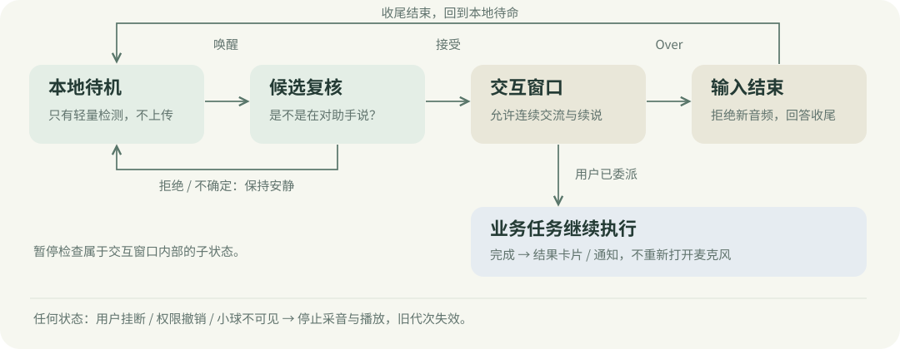
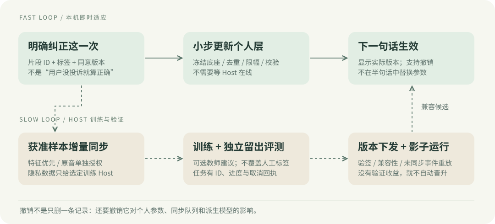
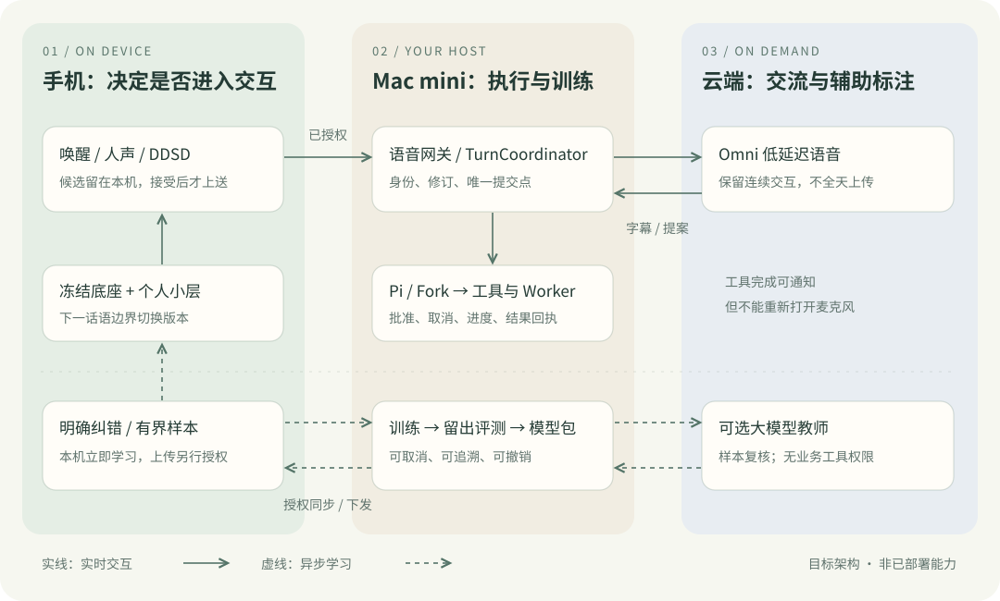

01 / THE WRONG INTERRUPTION
最令人不安的，
不是没听懂，是不该听的时候接了话。
你戴着耳机，问助手最近哪个 Agent 完成了任务。它回答了。你转头和朋友说了一句“这个先别动”，它又认真地开始处理。旁边的电视继续说话，它也继续回应。
再换一个更聪明的大模型，可能只是让这些不该发生的回答更流畅。问题出在更早的位置：谁决定这段声音可以成为一次交互？
“能听见”是一种能力。
“该不该听”是一种边界。
我们希望 TermBridge 成为一个随时可用的个人入口：手机在身边，电脑上的 Agent 在工作，人仍然决定要做什么。但随时可用，不应该等于把一天的环境声音持续交给云端。
因此，我们把语音问题拆开：有没有人声、是不是本人、是不是对助手说、有没有说完、要交给哪个 Agent，以及是否允许执行。一个分数不能回答这六个问题。
DDSD，Device-Directed Speech Detection，判断“这句话是否说给设备听”。它不是声纹认证，也不是语音转文字。主人也会和别人聊天。
02 / A BOUNDARY FOR ATTENTION
不是永远打开麦克风通道，
而是短暂地进入一段交互。
待机时，手机只保留最小的本地检测。被唤起后，一段短暂的交互窗口打开：你可以提问、补充、打断。窗口结束，新的环境音不再上传；已经委派出去的任务可以继续运行。


“Over”仍然有用。它是明确的输入结束信号，不是挂断一切，也不是取消所有 Worker。助手刚问你“哪个仓库？”，则可以为你的回答保留短窗口。电视声音、工具执行耗时和助手自己的播报，都不能替你延长这个窗口。
自然连续通话仍保留为用户主动选择的模式。长时间待命则应该采用更克制的策略：不确定时先安静，保留唤醒词和按键作为可靠入口。模型失败，不应降级成“所有声音都上传”。
这也不是一个纯 Prompt 问题。客户端需要真正的音频准入与代次控制，Host 需要一个唯一的轮次提交点。旧工具结果不能在你重新开口后抢着续答。
03 / TWO SPEEDS OF LEARNING
你纠正一次，
它应该真的改变一点。
如果每次说“不是在跟你说”，只是得到一句道歉，系统并没有变得更懂你。我们想让这次纠正落到一个具体片段、一个明确标签，以及一组可以核验的参数变化上。
快路径在手机：冻结负责提取声音特征的底座，仅对很小的个人层做有限更新。保存、去重、校验，然后在下一句话边界启用。既不用等待 Mac mini 在线，也不在你说到一半时更换判断标准。
慢路径在自己的电脑：累计获准样本，划分训练与独立测试，重新训练和校准，检查是否真的减少误触发。只有兼容、通过验证的候选版本，才进入手机的影子评测与启用流程。


一次纠正，参数会怎样动？
这里有一个固定底座分数和三个合成特征。点击按钮，仅在本页面更新一个线性个人层。分数变化不代表真实准确率提升。
尚未调整。模型通常需要多样的明确反馈，不能凭一条样本学会所有场景。
我们不是要在手机里训练一个越来越大的聊天模型。公开研究已有约 50 万参数的轻量声学方案，也有约 500 万参数的 DDSD 学生模型；个人化层可以远小于底座。[1][2]
但“小”不能偷偷省略声学编码器、音频缓存和运行库。我们的专用 DDSD 权重预算是 5–10 MB，个人层小于 1 MB；这是设计预算，不是手机实测。冻结编码器的首个实验候选来自开源 Smart Turn，迁移到 DDSD 必须重新训练独立分类头，不能把原来的“说完了”分数改名使用。[3]
04 / YOUR DATA, YOUR BOUNDARY
真正的个人化，
从“这次允许学什么”开始。
数据越多，不一定越懂你。把错误样本持续收进去，也可能让系统越来越偏。尤其不能把“用户没有投诉”当作接受正确，更不能默认认为每天的环境声音都是自己的训练素材。
四个开关，四种许可。
允许本机学习，不代表允许上传；允许同步自己的电脑，不代表允许发给云端；特征和声纹也不是匿名数据。
默认不保存原音。真正需要录音对照时，由用户主动进入场景校准，看到范围与保留时间，并能随时结束。
删除也要贯穿整条链路：删除样本、撤销排队上传、处理受它影响的模型。Host 离线，就如实显示“待同步删除”，而不是提前宣称已经消失。
教 DDSD 分清一次误接受。
教端点判断别把停顿当结束。
只说明结束，不是整段意图真值。
05 / THE RIGHT JOB FOR EACH MODEL
大模型当老师、当执行者。
不要让它全天站在门口。
手机上的小模型先守住音频边界；进入交互后，Omni 继续负责低延迟交流。对于确实含糊的停顿，可以让一个没有工具权限的判断器参考少量上下文，给出“继续等”“可以交接”或“需要澄清”。
这里不发送整个 History、全部 Agent 日志和所有图片。上一轮问了什么、当前还缺哪个参数、这句话是否沿着同一个任务继续，往往比一大段无关 Memory 更有用。相关研究也表明，历史上下文和 ASR 不确定性值得联合考虑，但不等于文字模型能看穿说话对象。[4]


在慢路径里，大模型可以帮助发现标签冲突、挑出值得复核的样本，辅助蒸馏。但它的猜测不能盖过用户明确说的“刚才不是在问你”。没有足够证据，就留下 unknown，而不是编出高置信度。
复杂任务仍然交给执行 Fork，再通过受控工具委派 Codex 或 Claude。修改代码、操作日历和学习个人参数，各有自己的授权与回执。一个学习任务不应该因为“用了 Agent SDK”，就拥有读取整台电脑的权力。
费用应该随着真正的交流、少量不确定判断、获准的教师批处理增长，而不是随着房间里有声音的时长增长。
本地更新不产生云模型 tokens；仍然有手机耗电和 Host 算力成本。所有节省比例都要用真实 usage 验证。06 / EVIDENCE BEFORE CONFIDENCE
新增实测：Open Yap 公开 8.922 小时的逐词时序，25 个长停顿续说回放全部通过。公开语义样本 80 条，标签一致 68 条，另有 4 次超时，保留全部分歧。
个人学习已接入 tb serve：先确认，再训练，反馈能影响下一轮。三个不同通话中一致确认的相同表达和前文，才能形成可撤销的等待/忽略规则。11 组闭环通过，但不是泛化准确率 100%。
不是“看起来更懂我”，
而是少打扰、少漏接、少花钱。
最容易得到的漂亮数字，是训练之后再测试刚才那条样本。最难得到的证据，是第二天换了耳机、到了车里、旁边有人说话，系统依然知道该不该回应。
所以我们按完整会话、日期和场景分开训练与测试。在线学习先预测计分，再更新参数；原音、修订文本和增强副本不能偷偷跨进测试集。通用模型、个人层、Host 训练、上下文判断分别消融，证明每一层值得留下。
| 要量什么 | 起始目标 | 当前证据 |
|---|---|---|
| 环境声误启动 | < 0.1 次 / 小时 | 待真实场景回放 |
| 目标话语接受率 | ≥ 95% | 待独立留出集 |
| 个人小层更新 P95 | ≤ 500 ms | Android 已实现；真机待测 |
| 未授权待机音频 | 0 字节上传 | 新链路待端到端验收 |
几十秒安静的演示，不足以证明一天都不会误唤醒。即使三十小时里一次也没发生，稀有错误的上界仍然值得谨慎估计。还要测电池、蓝牙、游戏并发开麦和后台可见性；普通 Android App 并不拥有系统助手的一切权限。[5]
ASR 留在云端。本地 6 特征校准头可以学习、撤销并与 Host 对账；异步工具回执不会再自动抢回新一轮说话权。实验使用文件和 PCM 管道，没有播放器，也没有采集房间里的声音。
| 实验 | 观察 | 结论 |
|---|---|---|
| “我最近的” + 2.6 秒 + “Agent 是什么” | 1 条完整输入、1 次真实 mock 工具回执，回答 TermBridge 正在做语音控制验证 | 原始复现通过 |
| 相同话语，停顿 4.5 秒 | 文字已拼接，但 Omni 仍解释 Agent 的概念，没有调用工具 | 长分句交接失败 |
| 160 条声学特征对照数据 | 相同特征、相反意图：留出集 50%，高置信覆盖 0 | 仅声学标量不够 |
上表保留首轮历史反例。后续修复把声学分段与语义提交分开：4.5 秒停顿、12 秒一次追问以及连续两轮查询的管道回放通过，Host 已更新、三星已安装，智能停顿默认开启。参数校准仍是影子模式，真机听感仍待验证。查看最新根因、回执和装机证据 ↗
另外 8 个新场景做了 32 次云端对照：只给末句，与完整意图一致的是 4/8；加上前半句是 6/8；带最近上下文是 8/8。它说明上下文有用，不说明模型已经“百分之百聪明”。这些是作者编写的启动样本，模型返回只作待复核建议，没有混成人工真值去训练个人参数。
我们还没有越过的边界
CAM++ 本人校验仍关闭；完整语义 DDSD 尚未验收。新的数据与校准闭环不保存录音、不自动把云端标签当作真值，也尚未成为生产音频的判断门。构建与单测通过，不代表车内风噪、电视旁人、长停顿或 24 小时耗电已经验证。
THE QUIET AMBITION
不是让它听得更多。
是让每次倾听，都有理由。
手机学习细微的个人习惯，自己的电脑验证这些变化，大模型只在需要时参与。人仍然拥有纠正、撤销和关闭的权力。
一个真正能陪伴很久的助手，需要的可能不是更强的存在感，而是更可靠的边界。
阅读完整工程方案参考与实现边界
- Knowledge Transfer for Efficient On-device False Trigger Mitigation小型声学学生的研究参照，不是我们的测量。
- Adaptive Knowledge Distillation for Device-Directed Speech Detection约 5M 学生模型；不能假定私有数据与产品权重可复用。
- Smart Turn v3.2开源 EOU 模型与训练代码；DDSD 是需要另行验证的迁移任务。
- Device-Directed Speech Detection for Follow-up Conversations Using Large Language Models上下文与识别不确定性的研究参考。
- Android：Sharing audio input后台与并发采音不能仅凭模型设计保证。
- 本项目工程方案与源码映射数据契约、更新算法、Host job、版本竞态、权限、消融与验收。
设计起于 master@9cd9241，本批实现基于 master@3610ee9；尚未部署。三个图解为可编辑 SVG；页面演示仅改变合成参数，刷新后清除。网页无网络资源、无分析上报、无麦克风访问。